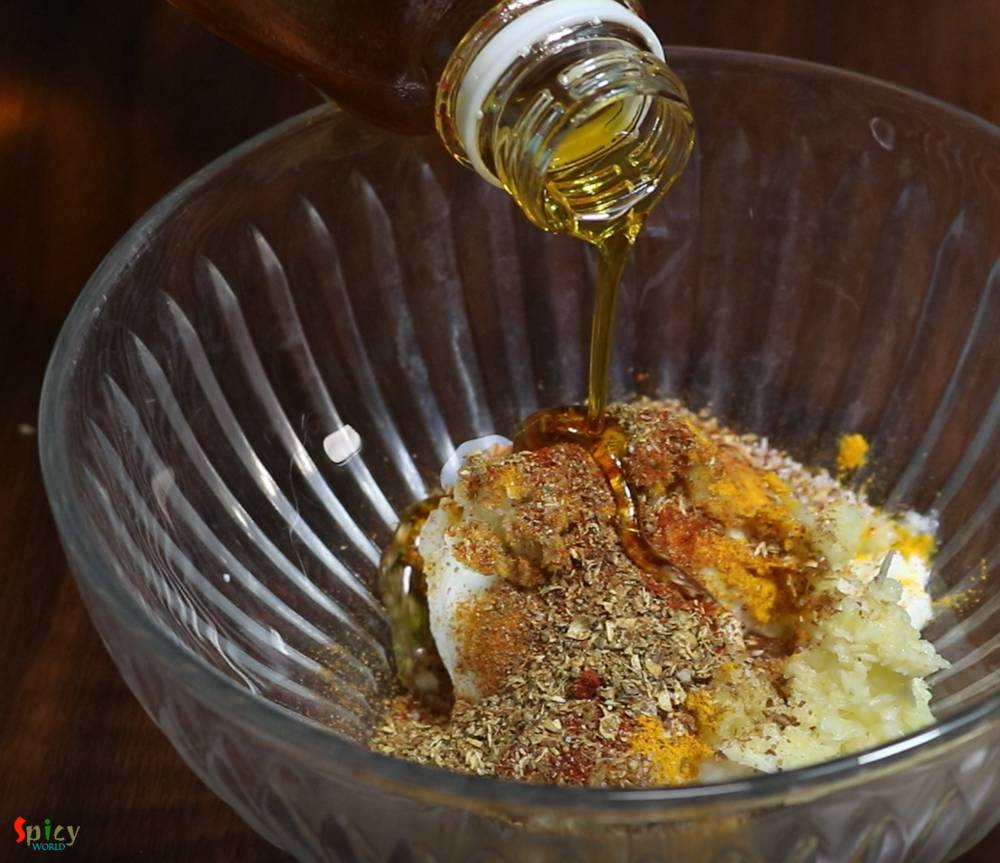

Simple and Easy Recipes
Sunday Mutton Curry
© 2016 Spicy World, Published on: Jan 17, 2019
Sunday mutton curry is a super easy, fuss free goat meat recipe which goes best with plain rice. This mutton curry is my family favorite and almost every sunday they demand to have it on lunch. And in the evening, my husband silently ask me is there any left over from lunch so that we can have it with roti at dinner? Yes, this sunday mutton curry is really close to our heart and we love it to the core. Try this in your kitchen and enjoy a lovely lunch with your family on sunday.

Ingredients
- 750 grams of medium size mutton pieces.
- Paste of 1 big onion.
- 2 Tablespoons of ginger garlic paste.
- 3-4 Tablespoons of yogurt.
- Spice powder (1 Teaspoon of turmeric powder, 2-3 Teaspoons of red chili powder, 1 Teaspoon of kashmiri chili powder, 1 Teaspoon each of roasted cumin and coriander powder).
- Salt and sugar as per your taste.
- 5-6 Tablespoons of mustard oil.
- 1 big potato, cut into four chunks.
- Hot water.


Steps
Marinate the washed mutton with yogurt, ginger garlic paste, all of the spice powder, some salt and 2 Tablespoons of mustard oil for at least 3 hours or for the best result keep it overnight in refrigerator.
Before making the curry, sprinkle a pinch of salt and turmeric powder over the potatoes, rub them well.
Then heat the remaining mustard oil in a pan.
Add the potatoes, fry for 2-3 minutes.
After that take them out from oil and keep aside for later use.
In that same oil add onion paste and cook for 7-8 minutes or until the smell is gone.
Then add the marinated the mutton and cook on medium flame for 10 minutes.
Add some sugar and more salt as per your taste. Mix well and cook for another 10-15 minutes.
After cooking for almost 30 minutes, the color of the dish will become red like this.
For the soft and succulent mutton pieces, heat half cup of water in a pressure cooker then put all of the half cooked mutton along with the dry gravy and fried potatoes. Mix well.
Close the lid and cook until 6-7 whistles then let the pressure release on its own. Cooking time may vary upon the quality of mutton. If your meat is very fresh and young probably it will take 2-3 whistles.
After opening the lid, if the gravy seems too thin then cook little longer on high flame until you get the desired consistency. Add little garam masala powder at the end if you wish.
Your sunday mutton curry is ready to serve.
Serve this hot with plain rice or roti ...
")